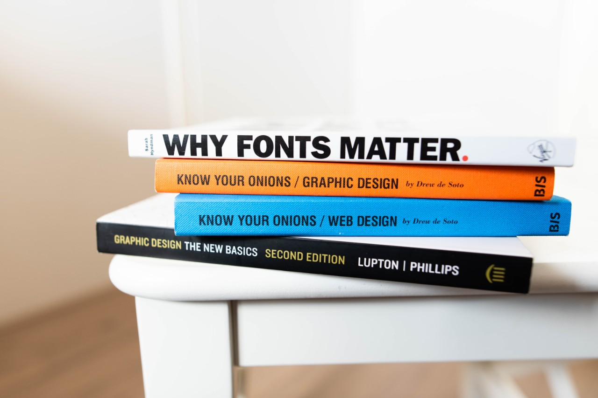

Web Development
As a beginner developer I am just starting out with coding, but I do have some experience with Wordpress content management.
I have created my own websites using Wordpress.com themes, and I also manage and create pages on our company website, which is built using Wordpress.
- HTML
- CSS
- Wordpress.com
- Wordpress themes
Design
In my current job I am responsible for creating some of our marketing materials and we use Canva to create these. Using our Brand Standards I create web and newsletter images, posters, signs, documents etc.
I enjoy using Canva but it does have some limitations. I'm looking forward to learning more about web design and tools in the Team Treehouse courses.
- Canva
- Brand Standards
- Design Best Practices
Business Skills
I have a Business Degree and several years' experience working in the corporate world.
I have experience in Marketing, Finance and Operations and the skills and experience in these areas - such as planning, project management, working in teams - will be very valuable in my future web development work.
- Teamwork
- Marketing
- Budgeting
- Project Management